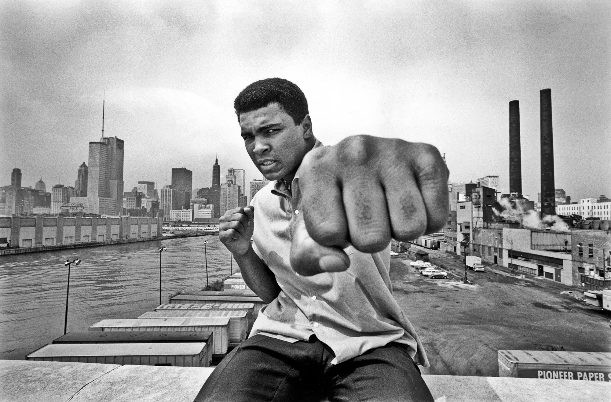
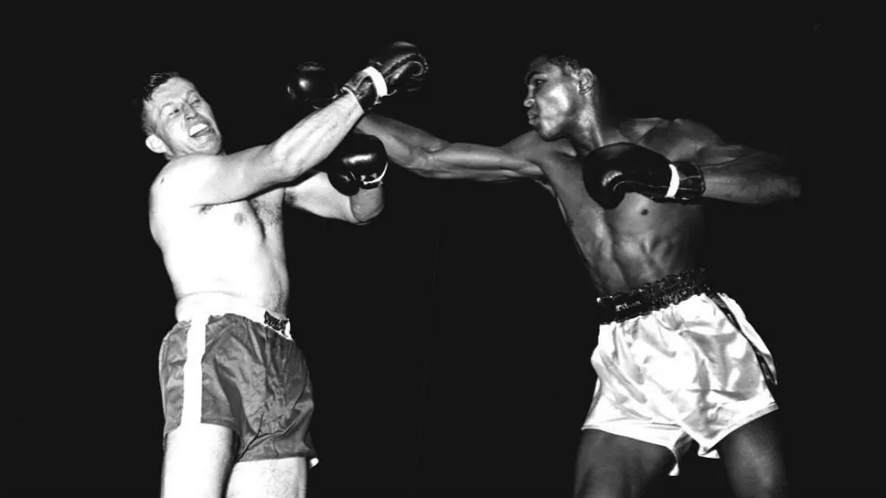

Első mérkőzés

Muhammad Ali első ellenfele Tunney Hunsaker volt, aki egy mindössze kétezer fős kisváros rendőrfőnökeként tevékenykedett. Hunsaker, akárcsak Cassius Clay, véletlenül került az ökölvívás világába. 1952-ben, amikor az Egyesült Államok részt vett a koreai háborúban, sorozás útján bevonult, és egy texasi támaszpontra vezényelték. Hatalmas kezekkel rendelkezett, amelyeket apjától örökölt. Amikor őrmestere meglátta ezeket, megdöbbent: „Ilyen nagy kezeket még soha nem láttam” – mondta neki, majd azonnal bokszkesztyűt adott a kezére. Így lett Hunsaker a húszas évekbeli nehézsúlyú bajnok, Gene Tunney nevét viselő ökölvívó. Öt évvel később, a katonai szolgálat letöltése után, családjával – első feleségével, Phyllis Jeannal és két gyermekükkel – Fayetteville-be költözött.
Shally Hunsaker édesapját minden szempontból szelíd óriásként jellemezte. Elmondása szerint édesapja csodálatra méltó, őszinte, szorgalmas és istenfélő ember volt, akit a város lakói nagyon szerettek – a bűnözők azonban annál kevésbé. Rendőrként Hunsaker igazi helyi hősnek számított: különösen élvezte, amikor a csúcsforgalomban kikapcsolhatta a forgalmi lámpákat, hogy személyesen irányítsa a közlekedést. Bátorsága legendás volt, semmitől és senkitől sem félt – ez a tulajdonság ökölvívóként is jellemezte. Egy interjúban így emlékezett vissza arra, amikor Muhammad Ali (akkor még Cassius Clay) ellen lépett ringbe: „Tudtam, hogy Clay megnyerte az olimpiát, így egy kemény ellenfél állt előttem. De nem ismerek olyan bokszolót, aki úgy lépne a ringbe, hogy vereségre számít. Én sem tettem soha.” – vallotta be évekkel később.
Cassius Clayt – akit később Muhammad Aliként ismert meg a világ – ellenfelei közül sokan fiatalos hevessége és impulzivitása miatt lebecsülték. Hunsaker sem kivétel: a mérkőzés előtti napokban így nyilatkozott róla – „Ez az ember nulla balra” –, ezzel utalva arra, hogy ellenfelét tapasztalatlannak és jelentéktelennek tartotta. Ennek ellenére Clay rendkívüli elszántsággal készült a küzdelemre. Hajnalban, már reggel öt órakor elindult futni, és három mérföldet tett meg a Louisville nyugati részén fekvő Chickasaw Parkban, a Grand Avenue közelében. Később az edzőteremben is intenzív edzést végzett, ám ezúttal nem bátyjával, Rudyval gyakorolt, mivel a mérkőzés súlya és jelentősége ezt nem tette lehetővé. A harc számára nem csupán egy megmérettetés volt – a jövőjének kezdetét jelentette.
Október 26-án, amikor minden előkészület befejeződött, Cassius Clay is örömteli híreket kapott. A városból érkező, tizenegy fehér vállalkozóból álló csoport megalakította a Louisville-i szponzorcsoportot, amely képviselni kívánta őt. A csoport arra fogadott, hogy a fiatal fekete ökölvívó, aki nemrégiben olimpiai érmet szerzett, sikeres lesz a profik között. Clay aláírt egy szerződést, amelynek értelmében kezdetben 10 000 dollár előleget kapott, emellett pedig évente 4000 dollárral magasabb fizetést, továbbá az ellátások és a költségek 15 százalékát. Ezzel a jövedelemmel Clay segített szüleinek otthonuk felújításában, vásárolt egy rózsaszín Cadillacet, és félretett 3000 dollárt arra az esetre, ha később adóügyi kötelezettségei támadnának. „Nem szeretném, ha Joe Louis-hoz hasonló problémák érnének” – mondta akkor, utalva arra, hogy az 1940-es évek nehézsúlyú világbajnokát adócsalás miatt elítélték. Clay ambiciózus volt, de okos és megfontolt is egyben.
Cassius Clay képviselői ugyanolyan izgatottan várták az első mérkőzés napját, mint maga a bokszoló. Céljuk volt, hogy megfelelő szakmai támogatást biztosítsanak számára, ezért mindenekelőtt megbízható edzőt kerestek neki. Kapcsolatba léptek Miamiban Angelo Dundee-val, aki akkoriban az egyik legelismertebb edzőnek számított, ám eleinte visszautasította az ajánlatot. Dundee így nyilatkozott: „Nem akarok belekeveredni. Hallottam, hogy az első harcára készül, és még nem vagyok meggyőződve. Majd beszélünk.” Néhány héttel később azonban elfogadta Clay-t tanítványának, és ezzel elindult az a hosszú együttműködés, amely több mint két évtizeden át tartott. Dundee később így emlékezett vissza: „Soha nem volt közöttünk nézeteltérés. Ő volt a legjobb ökölvívó, akivel valaha dolgoztam. Nem dohányzott, nem ivott, minden könnyen ment vele.”
„Ő volt a leggyorsabb ökölvívó, akit valaha láttam” – ismerte el Hunsaker a mérkőzés után.

|